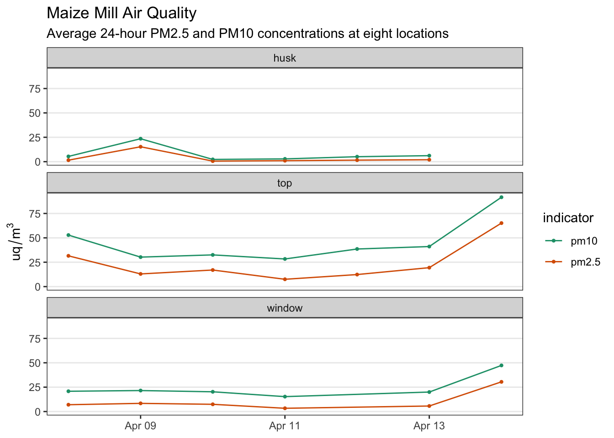
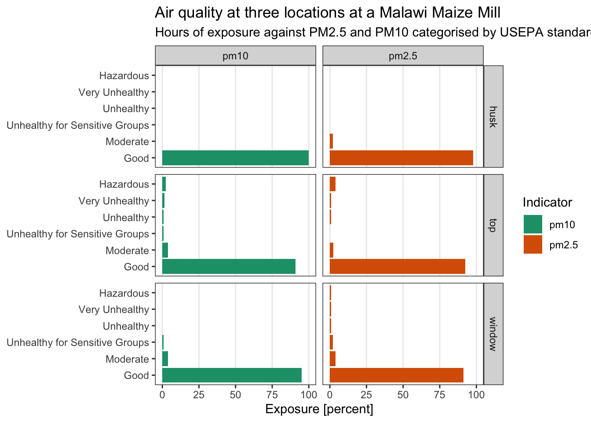
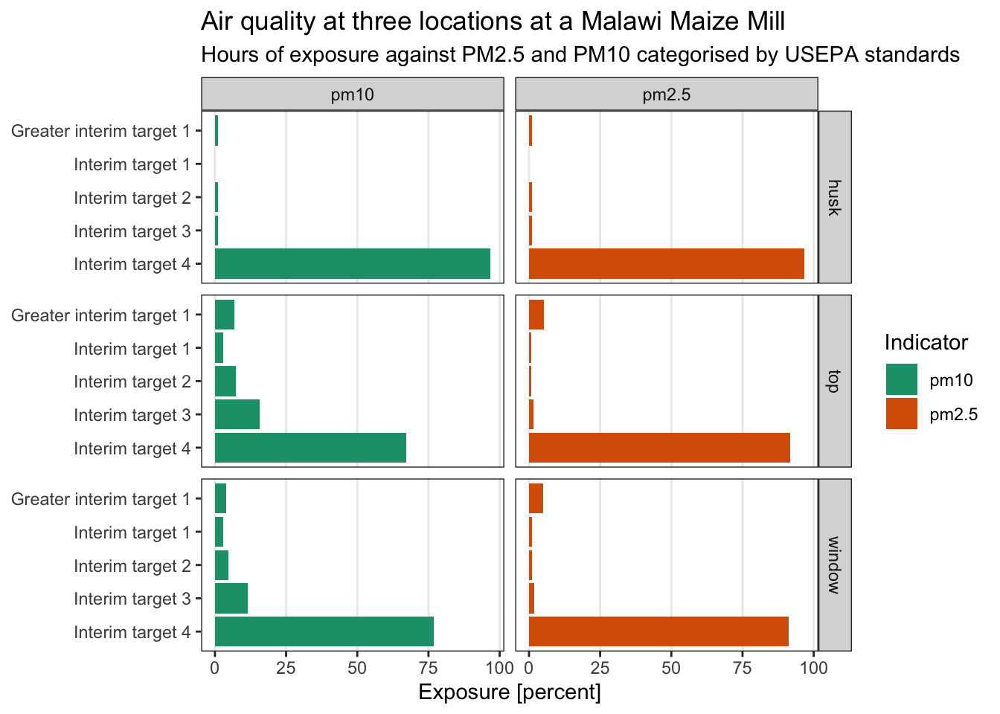
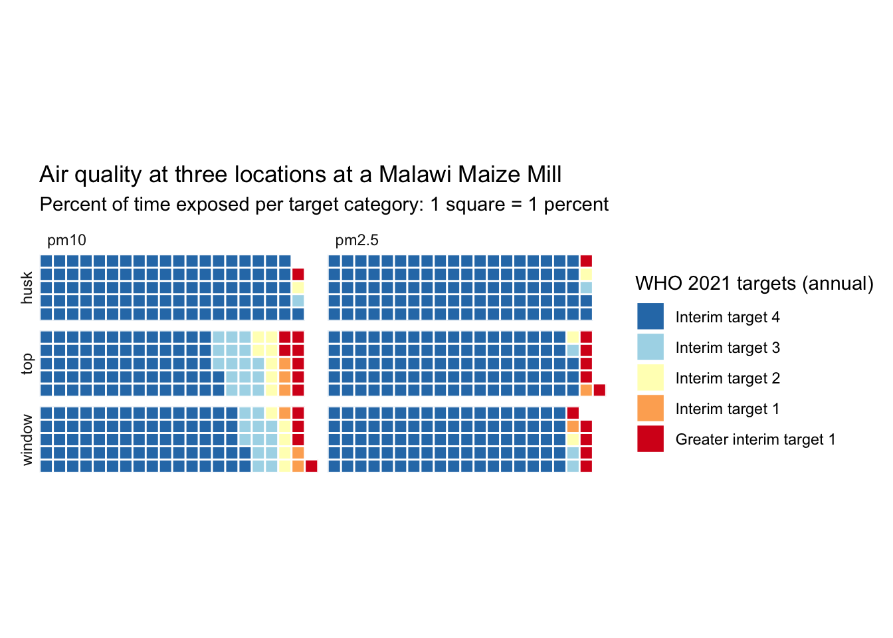
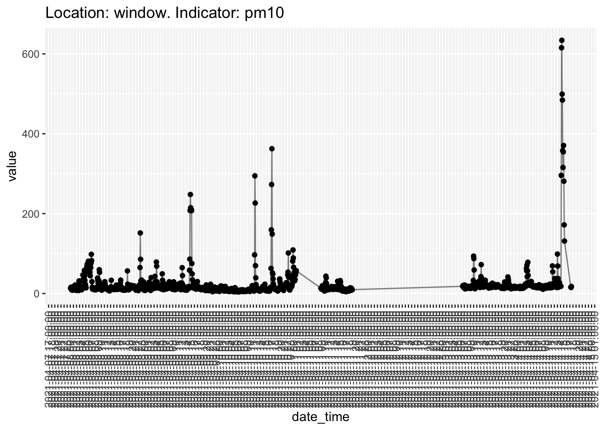

Manuscript Maize Mills
Exploratory Data Analysis
Data Exploration
Plot: Overview
Plot: Daily 24-hour average by date

Plot: Day time vs night time averages (6-18, 18-6)

Plot: Exposure in hours in categories of hazard
Percent (US EPA)

Percent - WHO 2021

Waffle plot - WHO 2021 (used)

Analysis of peaks
Questions:
- What does air quality say about who this effects? Vulnerability
- Does the built environment matter? Windows, Operators
Table: Peaks over the limit for hazardous ([worldhealthorganization2021who])
- Peak for PM2.5: > 35 Greater interim target 1, Annual
- Peak for PM10: > 70 Greater interim target 1, Annual
- Table 1 counts the number of data points (5 minute intervals between them) above these two limits over all days (column
nshows the total number of data points)
| location | n | pm10 | pm2.5 |
|---|---|---|---|
| husk | 1132 | 8 | 10 |
| top | 1608 | 109 | 87 |
| window | 1240 | 49 | 61 |
Plot: Overview (as reference)
Detail into peak (event)
Issues
- measurements for husk, top, and window not taken at the exact same time
- events might be at different times
- separate analysis for each indicator and location
Method for pm10 and pm2.5 and location top
- Each time the pm values are above 100, we assume an “event” happens
- An “event” means that the mill is switched on
- We number events in increasing order
- Then, we take the mean of the values that are above 100 for each event
- The number of minutes of exposure are calculated by multiplying each data point with 6 minutes
- this is because measurements are taken every 6 minutes
pm10 location top
See Table 2.
| date | event_no | location | indicator | minutes | mean_exposure |
|---|---|---|---|---|---|
| 2021-04-08 | 1 | top | pm10 | 120 | 393 |
| 2021-04-08 | 2 | top | pm10 | 18 | 469 |
| 2021-04-09 | 3 | top | pm10 | 18 | 437 |
| 2021-04-09 | 4 | top | pm10 | 36 | 284 |
| 2021-04-10 | 5 | top | pm10 | 24 | 560 |
| 2021-04-10 | 6 | top | pm10 | 24 | 675 |
| 2021-04-11 | 7 | top | pm10 | 24 | 360 |
| 2021-04-11 | 8 | top | pm10 | 60 | 138 |
| 2021-04-12 | 9 | top | pm10 | 6 | 101 |
| 2021-04-12 | 10 | top | pm10 | 24 | 496 |
| 2021-04-12 | 11 | top | pm10 | 18 | 439 |
| 2021-04-13 | 12 | top | pm10 | 24 | 479 |
| 2021-04-13 | 13 | top | pm10 | 24 | 557 |
| 2021-04-14 | 14 | top | pm10 | 36 | 554 |
| 2021-04-14 | 15 | top | pm10 | 18 | 432 |
| 2021-04-14 | 16 | top | pm10 | 18 | 593 |
| 2021-04-14 | 17 | top | pm10 | 84 | 404 |
Table 3: The median event time (milling process) for location top and indicator pm10 is 24 minutes with a median exposure of 439. Following US EPA standards, operators are exposed to pm10 at hazardous concentration for half and hour during every milling process.
| location | indicator | median_minutes | median_exposure |
|---|---|---|---|
| top | pm10 | 24 | 439 |
pm25 location top
See Table 4.
| date | event_no | location | indicator | minutes | mean_exposure |
|---|---|---|---|---|---|
| 2021-04-08 | 1 | top | pm2.5 | 114 | 325 |
| 2021-04-08 | 2 | top | pm2.5 | 18 | 299 |
| 2021-04-09 | 3 | top | pm2.5 | 18 | 304 |
| 2021-04-09 | 4 | top | pm2.5 | 36 | 239 |
| 2021-04-10 | 5 | top | pm2.5 | 18 | 498 |
| 2021-04-10 | 6 | top | pm2.5 | 30 | 411 |
| 2021-04-11 | 7 | top | pm2.5 | 12 | 358 |
| 2021-04-12 | 8 | top | pm2.5 | 12 | 487 |
| 2021-04-12 | 9 | top | pm2.5 | 18 | 295 |
| 2021-04-13 | 10 | top | pm2.5 | 18 | 375 |
| 2021-04-13 | 11 | top | pm2.5 | 18 | 507 |
| 2021-04-14 | 12 | top | pm2.5 | 36 | 505 |
| 2021-04-14 | 13 | top | pm2.5 | 12 | 270 |
| 2021-04-14 | 14 | top | pm2.5 | 18 | 413 |
| 2021-04-14 | 15 | top | pm2.5 | 72 | 394 |
| 2021-04-14 | 16 | top | pm2.5 | 6 | 160 |
Table 5: The median event time (milling process) for location top and indicator pm2.5 is 18 minutes with a median exposure of 367. Following US EPA standards, operators are exposed to pm2.5 at hazardous concentration for half and hour during every milling process.
| location | indicator | median_minutes | median_exposure |
|---|---|---|---|
| top | pm10 | 24 | 439 |
Appendix
Interactive Plots
only viewable in HTML version
Top
Husk
Window
